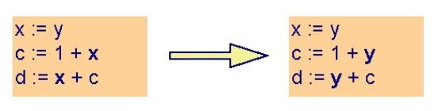

Распространение копий - это процесс замены переменных в инструкциях на другие переменные, в случае, если значение второй переменной было присвоено первой в результате прямого присваивания. Например, "y = x; z = 3 + y" может быть заменено на "z = 3 + x". Ещё один пример на рисунке ниже (идёт замена 'x' на 'y')
На графе ниже представлен результат анализа потока данных для прямых копий (инструкции вида a = b)
А на этом графе представлен результат выполнений оптимизации
Подробнее можно узнать в книге "Компиляторы: принципы, технологии и инструменты". 1-е издание